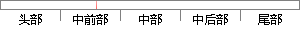

这个就是本嵌入式操作系统的实现，具体的就是任务管理模块、中断服务模块、时间管理模块和内存管理模块。
片段位置图

相似结果
相似片段：具体说明其时间管理,任务管理,进程间通讯,内存管理等...ii下开发的一些构件模块的编写原理,实现方式;第五章...这个时候的嵌入式系统大部分不是基于操作系统,而只是...
| 标题 | 《基于μC/OS-Ⅱ的嵌入式系统》 |
| 对比库 | 中国学位论文全文数据库 |
| 作者 | 郭江鸿 |
| 机构 | 太原理工大学 |
| 分类 | 计算机应用 |
| 年份 | 2004 |
| 相似率 | 80.49% （严重抄袭） |
※ 片段修改建议 ※
近似词参考：- 任务：使命 义务
- 具体：详细
- 服务：办事
- 管理：办理 经管 治理
- 就是：便是
- 中断：间断 中止 停止
系统自动生成语句：这个便是本嵌入式操作系统的实现，详细的便是使命办理模块、间断办事模块、时间办理模块和内存办理模块。
注：本片段修改建议为系统自动生成，仅供参考。